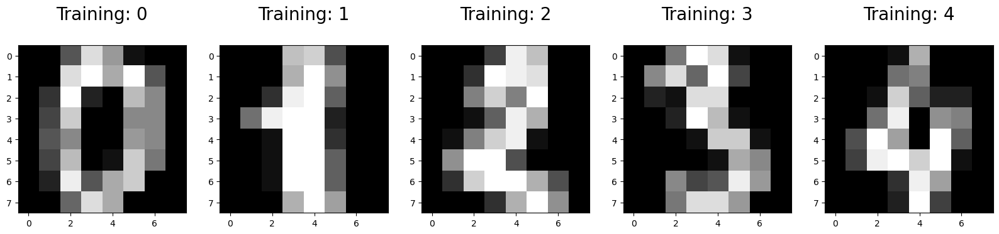
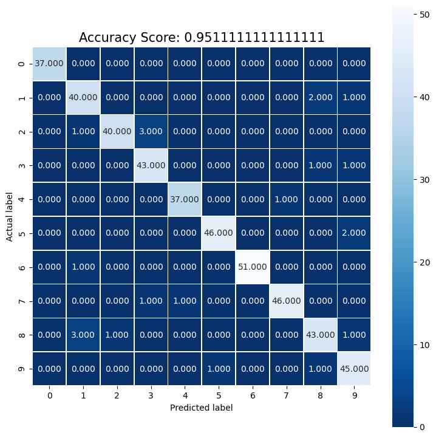
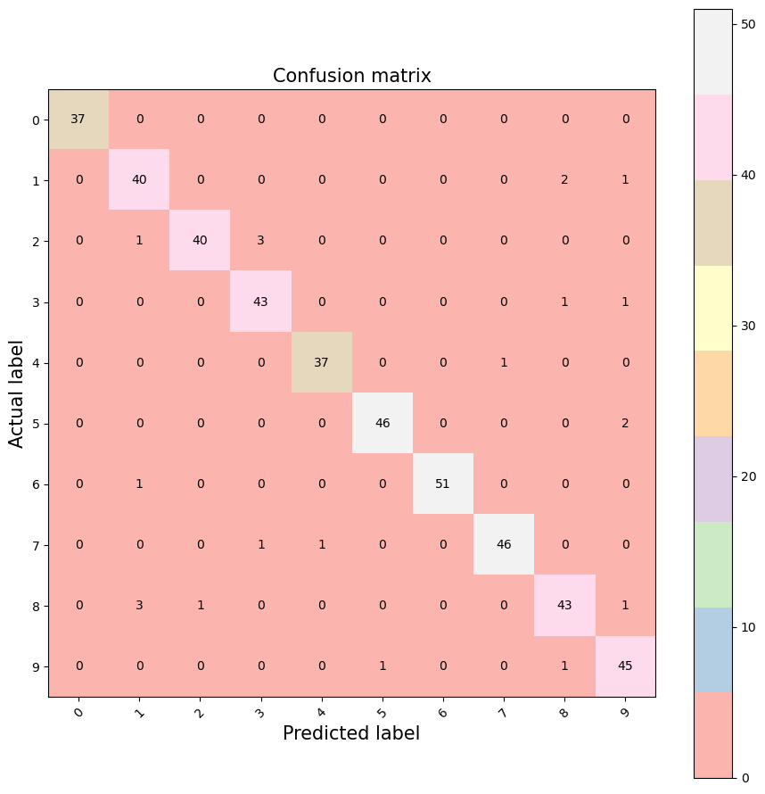
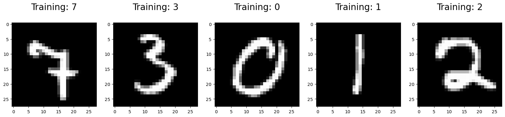
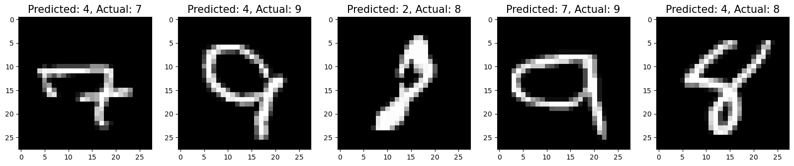

Lecture 6 – exercises -logistical regression#
Understand the code
Write a short report
1， Download the dataset#
from sklearn.datasets import load_digits
digits = load_digits()
# Print to show there are 1797 images (8 by 8 images for a dimensionality of 64)
print("Image Data Shape" , digits.data.shape)
# Print to show there are 1797 labels (integers from 0–9)
print("Label Data Shape", digits.target.shape)
Image Data Shape (1797, 64)
Label Data Shape (1797,)
2, Show the images and lables#
import numpy as np
import matplotlib.pyplot as plt
plt.figure(figsize=(20,4))
for index, (image, label) in enumerate(zip(digits.data[0:5], digits.target[0:5])):
plt.subplot(1, 5, index + 1)
plt.imshow(np.reshape(image, (8,8)), cmap=plt.cm.gray)
plt.title('Training: %i\n' % label, fontsize = 20)

3, Preprocessing the dataset: train and test#
from sklearn.model_selection import train_test_split
x_train, x_test, y_train, y_test = train_test_split(digits.data, digits.target, test_size=0.25, random_state=0)
4, We prepare 4 steps for the regression#
4.1, Import the model#
from sklearn.linear_model import LogisticRegression
4.2, Make an instance of the Model#
# all parameters not specified are set to their defaults
logisticRegr = LogisticRegression()
4.3, Training the model on the data#
logisticRegr.fit(x_train, y_train)
C:\Users\wengang\Anaconda3\lib\site-packages\sklearn\linear_model\_logistic.py:458: ConvergenceWarning: lbfgs failed to converge (status=1):
STOP: TOTAL NO. of ITERATIONS REACHED LIMIT.
Increase the number of iterations (max_iter) or scale the data as shown in:
https://scikit-learn.org/stable/modules/preprocessing.html
Please also refer to the documentation for alternative solver options:
https://scikit-learn.org/stable/modules/linear_model.html#logistic-regression
n_iter_i = _check_optimize_result(
LogisticRegression()In a Jupyter environment, please rerun this cell to show the HTML representation or trust the notebook.
On GitHub, the HTML representation is unable to render, please try loading this page with nbviewer.org.
LogisticRegression()
4.4, Predict labels for new data (new images)#
# Returns a NumPy Array
# Predict for One Observation (image)
logisticRegr.predict(x_test[0].reshape(1,-1))
logisticRegr.predict(x_test[0:10])
predictions = logisticRegr.predict(x_test)
# Measure the performance
# Use score method to get accuracy of model
score = logisticRegr.score(x_test, y_test)
print(score)
0.9511111111111111
Different visualization method to show the results
Seaborne
Matplotlib
import matplotlib.pyplot as plt
import seaborn as sns
from sklearn import metrics
cm = metrics.confusion_matrix(y_test, predictions)
print(cm)
[[37 0 0 0 0 0 0 0 0 0]
[ 0 40 0 0 0 0 0 0 2 1]
[ 0 1 40 3 0 0 0 0 0 0]
[ 0 0 0 43 0 0 0 0 1 1]
[ 0 0 0 0 37 0 0 1 0 0]
[ 0 0 0 0 0 46 0 0 0 2]
[ 0 1 0 0 0 0 51 0 0 0]
[ 0 0 0 1 1 0 0 46 0 0]
[ 0 3 1 0 0 0 0 0 43 1]
[ 0 0 0 0 0 1 0 0 1 45]]
# By the seaborn method
plt.figure(figsize=(9,9))
sns.heatmap(cm, annot=True, fmt=".3f", linewidths=.5, square = True, cmap = 'Blues_r');
plt.ylabel('Actual label');
plt.xlabel('Predicted label');
all_sample_title = 'Accuracy Score: {0}'.format(score)
plt.title(all_sample_title, size = 15);

# By the Matplotlib method
plt.figure(figsize=(9,9))
plt.imshow(cm, interpolation='nearest', cmap='Pastel1')
plt.title('Confusion matrix', size = 15)
plt.colorbar()
tick_marks = np.arange(10)
plt.xticks(tick_marks, ["0", "1", "2", "3", "4", "5", "6", "7", "8", "9"], rotation=45, size = 10)
plt.yticks(tick_marks, ["0", "1", "2", "3", "4", "5", "6", "7", "8", "9"], size = 10)
plt.tight_layout()
plt.ylabel('Actual label', size = 15)
plt.xlabel('Predicted label', size = 15)
width, height = cm.shape
for x in range(width):
for y in range(height):
plt.annotate(str(cm[x][y]), xy=(y, x),
horizontalalignment='center',
verticalalignment='center')

PART II: working on the real ditial dataset#
import numpy as np
import matplotlib.pyplot as plt
from sklearn.datasets import fetch_openml
from sklearn.model_selection import train_test_split
II.1, Download the MNIST dataset#
from sklearn.datasets import fetch_openml
#X, y = fetch_openml('mnist_784', version=1, return_X_y=True, as_frame=False)
#print(X.shape, y.shape)
mnist = fetch_openml("mnist_784")
# These are the images
# There are 70,000 images (28 by 28 images for a dimensionality of 784)
print(mnist.data.shape)
# These are the labels
print(mnist.target.shape)
(70000, 784) (70000,)
II.2, split the dataset into training and testing#
from sklearn.model_selection import train_test_split
train_img, test_img, train_lbl, test_lbl = train_test_split(mnist.data, mnist.target, test_size=1/7.0, random_state=0)
II.3 show the images and lables of the MNIST data#
train_lbl[0:5]
28926 7
9080 3
52804 0
28094 1
46585 2
Name: class, dtype: category
Categories (10, object): ['0', '1', '2', '3', ..., '6', '7', '8', '9']
plt.figure(figsize=(20,4))
for index, (image, label) in enumerate(zip(train_img[0:5].values, train_lbl[0:5])):
plt.subplot(1, 5, index + 1)
plt.imshow(np.reshape(image, (28,28)), cmap=plt.cm.gray)
plt.title('Training: %i\n' % int(label), fontsize = 20)
#plt.title(['Training: ', label], fontsize = 20)

II.4, Four-step modelling by sklearn#
4.1, Import the ML/Regression model#
from sklearn.linear_model import LogisticRegression
4.2, make an instance of the chosen model#
# all parameters not specified are set to their defaults
# default solver is incredibly slow thats why we change it
#logisticRegr = LogisticRegression(solver = 'lbfgs')
logisticRegr = LogisticRegression(penalty='l2',solver = 'newton-cholesky', max_iter=300)
4.3, train the model from the training dataset#
logisticRegr.fit(train_img, train_lbl)
LogisticRegression(max_iter=300, solver='newton-cholesky')In a Jupyter environment, please rerun this cell to show the HTML representation or trust the notebook.
On GitHub, the HTML representation is unable to render, please try loading this page with nbviewer.org.
LogisticRegression(max_iter=300, solver='newton-cholesky')
4.4, Predict the labels of new data (new images)#
# Returns a NumPy Array
# Predict for One Observation (image)
logisticRegr.predict(test_img[0:1]) #.values.reshape(1,-1))
array(['0'], dtype=object)
# Predict for Multiple Observations (images) at Once
logisticRegr.predict(test_img[0:10])
array(['0', '4', '1', '2', '4', '4', '7', '1', '1', '7'], dtype=object)
#Make predictions on entire test data
predictions = logisticRegr.predict(test_img)
II.5, Measuring Model Performance (MNIST)#
score = logisticRegr.score(test_img, test_lbl)
print(score)
0.9083
Display Misclassified images with Predicted Labels (MNIST)
import numpy as np
import matplotlib.pyplot as plt
index = 0
misclassifiedIndexes = []
for label, predict in zip(test_lbl, predictions):
if label > predict:
#print(label, predict)
misclassifiedIndexes.append(index)
index +=1
plt.figure(figsize=(20,4))
for plotIndex, badIndex in enumerate(misclassifiedIndexes[0:5]):
plt.subplot(1, 5, plotIndex + 1)
plt.imshow(np.reshape(test_img.iloc[badIndex].values, (28,28)), cmap=plt.cm.gray)
plt.title('Predicted: {}, Actual: {}'.format(predictions[badIndex], test_lbl.iloc[badIndex]), fontsize = 15)
